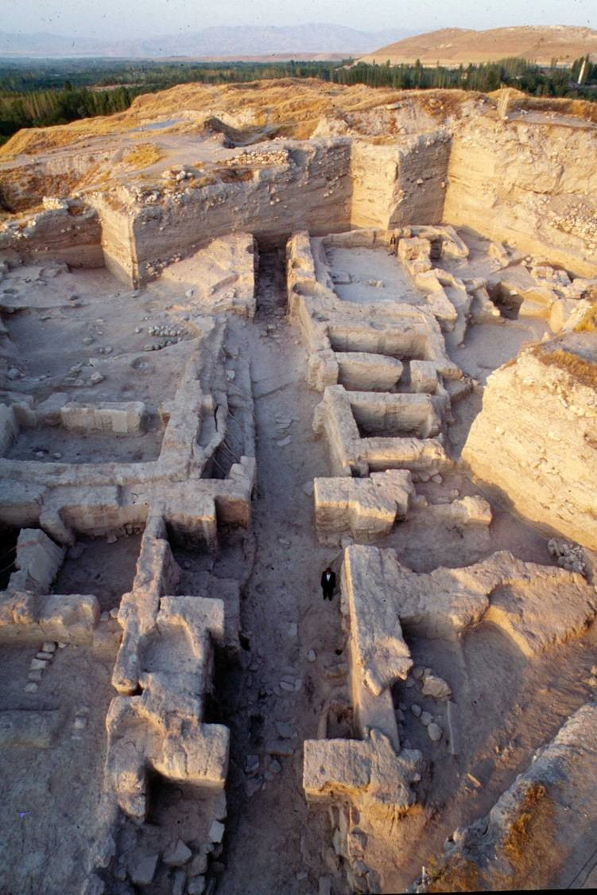
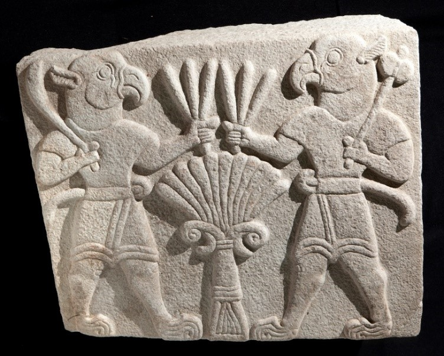
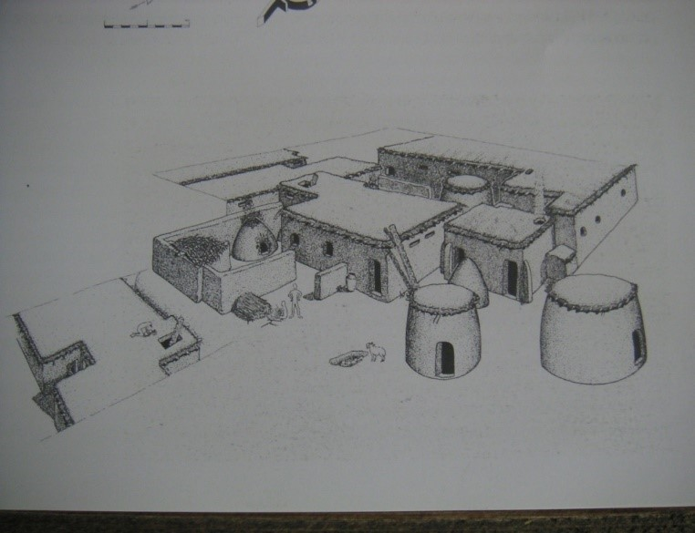
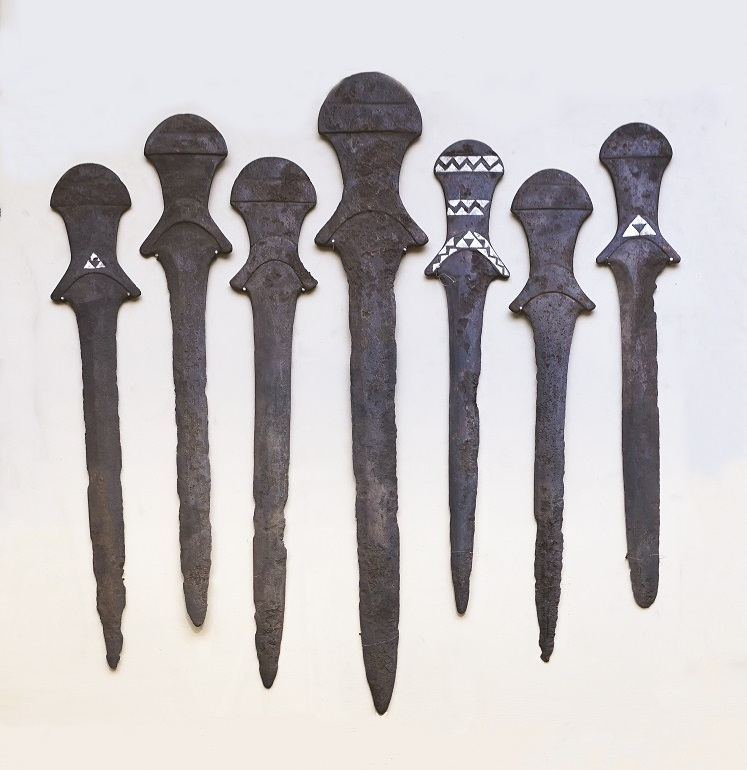
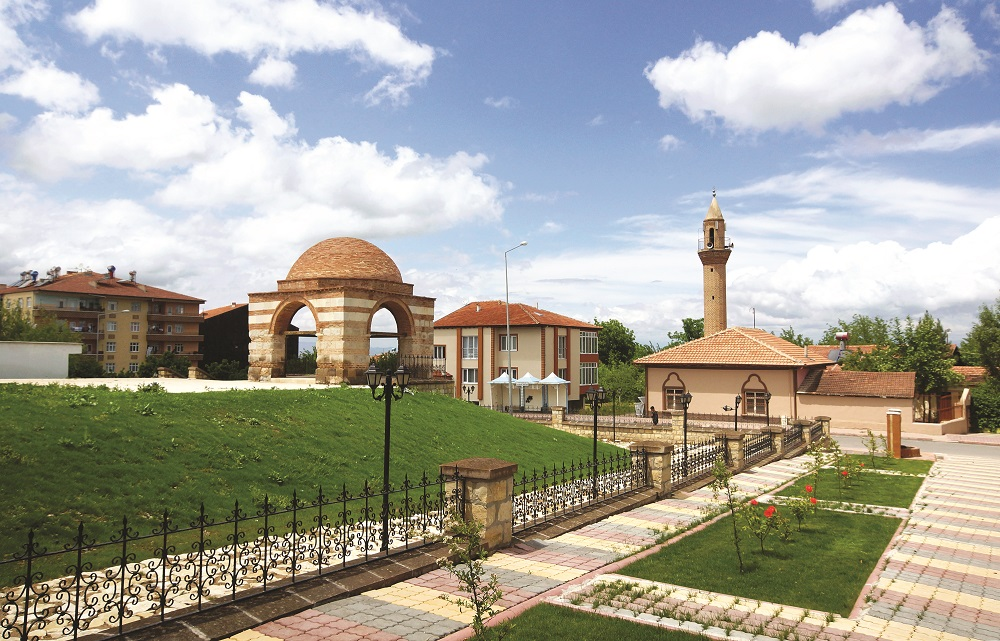
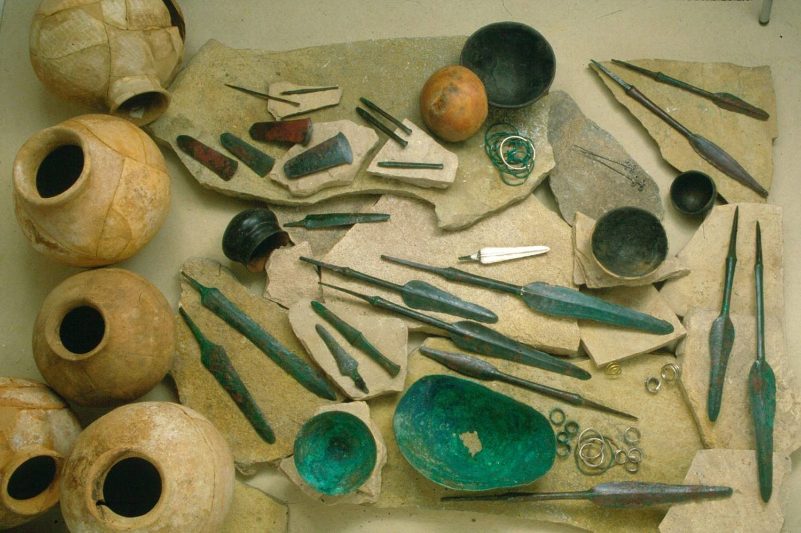
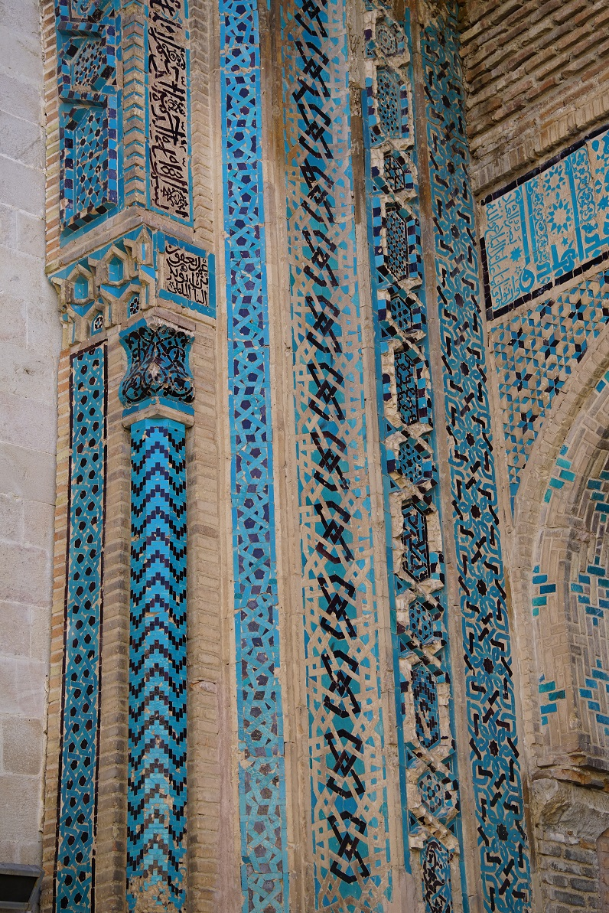
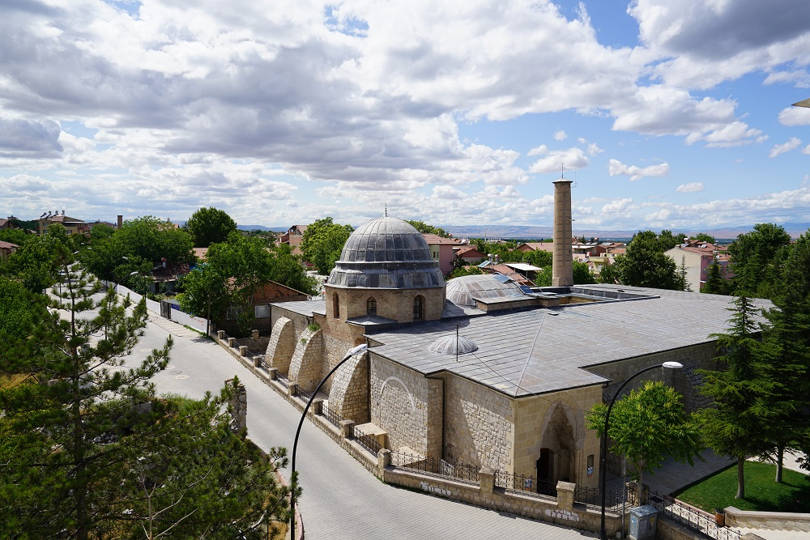
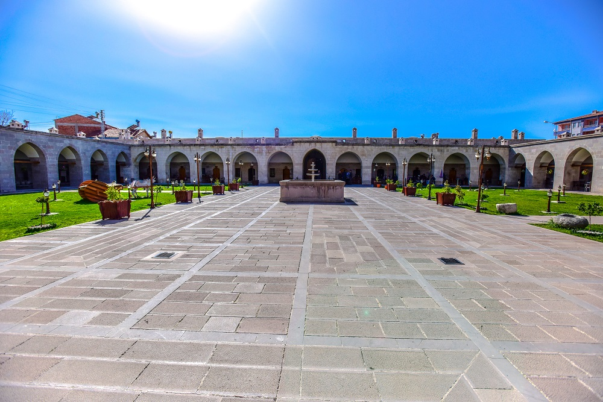

Malatya, eski çağlardan beri Anadolu ve Ortadoğu gecit veren kavşak noktasıdır. Doğuda en eski ulaşım yolu; Malatya - Sivas üzerinden Erzurum'a, oradan da Kafkasya'ya uzanan yoldur. Buna, Karasu-Aras yolu da diyebiliriz. Öte yandan Güneydoğu'ya Malatya ve Diyarbakır üzerinden Mezopotamya'ya uzanan yol önemlidir. Malatya'dan doğuya doğru Murat, Karasu-Van Gölü önemli tabi yollardan biridir. Diğer önemli bir yol ise Güneyden gelip Malatya'da düğümlenen Malatya - Kahramanmaraş arasında Torosların çok kesif göründükleri bir sahada, akış yönleri farklı vadilerin takip ettiği tabii bir koridor boyunca uzanmaktadır. Güneyde dağlar arasında açılmış bir başka yol, Adıyaman üzerinden Urfa'yı Malatyaya bağlamaktadır. Belirtilen yollar, Malatya'da birleşerek kuzeyde Kafkasya'ya, güneyde Çukurova, Mezopotamya ve Suriye'ye, batıda Ege sahillerine, doğuda İran ve uzak doğuya kadar uzanmaktadır. Bu yollar, Akad İmparatoru Sargon zamanından beri işlemekteydi. Hititler zamanında da işlemekte olan b yoldan geçerek Aşağı Fırat boylarına indiği, dolayısıyla Malatya civarında Fırat Nehrini geçtiği kaynaklarca belgelenmektedir. Bu yolun Kayseri-Kültepe'den başlayarak, Gürün Darende Malatya Samsat üzerinden Urfa'ya vardığı buradan da ikiye ayrılarak Gargarmış ve Halep'e diğerinin de Nusaybin üzerinden doğuya Asur ve Babil'e gittiği tahmin edilmektedir. Mezopotamya ile Anadolu arasındaki bu ticaret ve kültür alışverişinin bu yol üzerinden yapılması, Malatya'nın tarihi ve kültürel önemini artırmıştır.
Antik çağlarda kullanılan yolların yanında, Roma döneminde ticaretle sınırlanı korunması amacıyla yeni yol yapımına geçilmiştir. Malatya'nın büyük bir askeri merkez olması sebebiyle Romalılar, askeri ve ticari amaçla kullanlan yollarını Malatya'dan geçirmişlerdir. Bu durumu, yol kenarlarına dikilen mil taşları doğrulamaktadır. Bizans İmparatorluğu Roma yollarını aynı amaçla kullanmıştır. Araplar, Bizans topraklarına yaptıkarı akınlardan sonra geri çekilirken Kommagene ile Malatya arasındaki geçitten faydalanmışlardır. Türkiye ise Fırat Nehri'ni Malatya yakınlarında aşarak Orta Anadolu'ya ulaşmışlardır.

Coğrafi konum itibariyle tabii yol üzerinde olan Malatya ön tarihinin Paleolitik çağa kadar indiği,
Malatya'nın birçok yerleşim alanlarındaki mağaralar ile
özellikle de Yazıhan'daki Ansır (Buzluk) ve Malatya merkezinde İnderesi mevkiinde bulunan mağaralardan
anlaşılmıştır. 1979 yılında başlayan Karakaya Baraj
Gölü Kurtarma kazıları kapsamındaki İzollu mevkii Cafer Höyükte yapılan kazılarda, o yöre insanının
Paleolitik mağaralardan çıkıp ilk defa ovada yerleşik
köy hayatına başladıkları anlaşılmıştır.
Cafer Höyük kazılarıyla, Malatya ve çevresinin M.Ö. 7000 yılında İskâna başladığı anlaşılmaktadır.
1979-1986 yılları arasında kazıları sürdürülen
Pirot-Caferhöyük sonucu dünyanın ilk heykel örneği sayılan, beyaz kireçtaşından yapılmış küçük
figürünler, M.Ö. 7000 yılına tarihlenmektedir. Kazı sonrası gün
ışığına çıkarılan bu eserler halen Malatya Müzesinde sergilenmektedir. Tarih kronolojisini takip
ettiğimizde, yörenin ana seramiği tek renk olup, ateşte az
pişirilmiş koyu astarlıdır. Bu seramik yanında ithal malı Halaf tipi seramik örneklerinin Hekimhan,
Kuyuluk ve Arguvan Karahöyükte; Hassuna boyalı Seramik
örneklerine ise Aslantepe, Değirmentepe, İsahöyük ve Fırıncıhöyük’te rastlanmaktadır. Aslantepe ve
Değirmentepe kazıları, bölgedeki yerleşimin M.Ö. 5000-3000
yılları arasında Kalkolitik çağda devam ettiğini göstermektedir. Değirmentepe ve Aslantepe’de çok sayıda
taştan ve pişmiş topraktan damga mühürleri ile pişmemiş
toprak mühür baskıları bu yörelerin önemli bir ticaret merkezi olduğunu belgelemektedir. Anadolu ile
olduğu gibi, Kuzey Mezopotamya ve Suriye ile de Fırat Nehri
yolu ile ticaret bu dönemde yapılmıştır. M.Ö. 3000 yılında Malatya yöresinde seramik genellikle elle
yapılmış, hamuruna ince kum karıştırılmış siyah astarlıdır.
Bu seramik örneklerine; Aslantepe, Hasırcı, Fırıncıhöyük, Karahöyük, İsahöyük, Morhamam, Kösehöyük,
İmamoğlu, Değirmentepe, Köşgerbaba ve Pirothöyük’te
rastlanmıştır. Yine Malatya Kültür envanteri yüzey çalışması sırasında bu tür renkli seramik
örneklerinin yoğun olduğu yerler tespit edilmiştir.
Eski tunç II. döneminde, M.Ö. 2500 yıllarında başlayan seramik örneklerine yörede yer yer
rastlanılmıştır. Eski tunç III. evrelerine ait elle yapılan,
ateşle pişirilen seramikler Malatya bölgesinde çoğunlukla devetüyü renkli olup, üzerindeki süsler, geniş
bantlar şeklinde desenlerle kaplıdır. Bu örneklere
Aslantepe, Değirmentepe, Pirothöyük‘te rastlanmıştır. Aslantepe kazılarıyla 1992 yılında gün ışığına
çıkarılmış ve M.Ö. 3200 yıllarına tarihlenen tapınak,
bölgenin en önemli dini ve kültür merkezi konumuyla, Mezopotamya Kültürü ile çağdaş ve hatta Anadolu’nun
ilk tapınak örneklerinden olarak tarih ve arkeolojiye
ışık tutmaktadır. Arslantepe’de devam eden arkeolojik kazılarda daha verimli bilgilerin alınacağı
düşünülmektedir.
Malatya, kuruluş ve isim itibariyle başlangıçtan zamanımıza kadar büyük bir değişikliğe uğramadan gelen Anadolu şehirlerinden birisidir. Kültepe vesikalarında “Melita” şeklinde görülen Malatya’dan Hitit vesikalarında “Maldia” olarak bahsedilmektedir. Asur İmparatorluk devri vesikalarında ise “Meliddu, Melide, Melid, Milid, Milidia” olarak geçmektedir. Urartu kaynaklarında ise, “Melitea” denilmektedir. Malatya kelimesinin Hititçe “bal” anlamana gelen “Melid”den türediği anlaşılmaktadır. Hitit hiyeroglif kitabelerinde Malatya şehri, bir öküz başı ve ayağı ile ifade edilmektedir. Eski çağ coğrafyacılarından Strabon (M.Ö. 58- M.S. 21) Malatya’yı sürekli “Melitene” adı ile zikretmiştir. Kesin olarak yerini vermediği geniş bir alan içerisinde “Kataonia” ile Fırat Nehri arasında Kommagene sınırında Kappadokya Krallığı’nın (M.Ö. 280-212) on Valiliğinden birisi olarak gösterir. Ona göre Melitene, Sophene’nin (takriben bugünkü Elazığ ile Fırat Nehri arasındaki bölgeyi ifade eder) karşısında kurulmuş bir eyalet olduğu kadar kentleri bulunmayan bir bölgenin adıdır. Strabon’a göre bu yöre; zeytin-üzüm ve meyve ağaçlarıyla bezenmiş, Kapadokya’da bir benzeri bulunmayan tek yerdir. Phnius’a dayanarak Malatya’nın Asur kraliçesi Semiramis tarafından “Meliten” adıyla kurulduğunu kayıt eder. Bu bilgi, daha sonraki çalışmalarda aynen doğrulanmıştır. Gelişen Maldia-Melitene (Malatya), Kalkolitik Çağ’dan beri iskân görmüş ve bugünkü Aslantapede 6 ana tabaka ve 27 kültür katı bırakmıştır. Höyükte yapılan kazılar sonucunda; M.Ö. 3600-3500’lere ait tapınak, M.Ö.3300-3000 yıllarına ait bir kerpiç saray, ikibini aşkın mühür baskısı, kaliteli metal eserler bulunmuştur. Elde edilen veriler göstermektedir ki o dönemde Arslantepe, aristokrasinin doğduğu ve ilk devlet şeklinin ortaya çıktığı resmi, dini ve kültürel bir merkezdir. M.Ö. 5. bin yılın sonundan M.Ö. 4. bin yılın sonuna kadar olan zaman süresi içinde Malatya’nın bu bölgesi her ne kadar Yukarı Mezopotamya’nın bir parçasını oluşturmaktaysa da tam anlamıyla yerel özelliklerini yitirmemiştir. Özellikle M.Ö. 4.bin yılda Arslantepe, Orta Fırat bölgesindeki yerleşmeler içinde önemli bir yer tutmaktadır. Geç Kalkolitik Çağ’da yerel yüksek tabakalardan oluşan sınıf, politik ve dinsel egemenliğin yanı sıra ekonomiyi, ürün ve üretim idaresini ellerinde tutmaktaydı. Yörenin su kaynakları bakımından zengin, dolayısıyla tarım için son derece uygun, ayrıca sık sık taşan Fırat Irmağı’nın taşkın alanı dışında kalması gibi ayrıcalıkları, Arslantepe’nin en azından M.Ö. 5. bin yıldan Bizans Dönemi’ne kadar kesintisiz olarak iskân edilmesinde önemli etkendir. Yörenin doğal yapısından kaynaklanan gücü, yüksek tarım potansiyeli ile birleşince Arslantepe, topraklarını denetim altında tutabilen ve bölgedeki hammaddeyi işleyen ya da en azından işlenmesini organize eden egemen bir merkez konumunu kazanmıştır. Kerpiçten yapılmış anıtsal binaların bulunduğu geniş bir ortak kullanım alanı, M.Ö. 4. bin yılın sonlarında (M.Ö. 3300-3000) tepenin güneybatı yamacında en az 2600 m2 ’lik bir alana yayılmıştı. Bu alanda ortaya çıkarıldığı kadarıyla bu kısım görkemli mimari ve işlevsel açılardan farklı bölümlerden oluşan büyük bir yapı topluluğudur. Çok amaçlı düzeninden dolayı bu anıtsal yapı topluluğu Saray olarak nitelendirilebilir. Sarayın koridor duvarları baskı motif ve duvar resimleri ile bezenmiştir. Binanın çeşitli bölümlerinde çok sayıda mühür baskısının bulunması, idari etkinliklerin yoğunluğunu ve bu işlerde, malları depolardan alma ve mühürleme yetkisi bulunan çok sayıda memurun çalıştığını ortaya koymaktadır. Duvarlardaki zengin bezeme ve kabartmalarda gücü simgelemektedir. Bu bütün etkinliklerin merkezileştirildiği, kayıt amacıyla etkin bir mühürleme sisteminin kullanıldığı ve giderek bürokrasinin geliştiği, güçlü siyasi ve dini kurumları olan bir devlet sisteminin doğuşuna kanıttır. Geçmişte daha çok dinsel amaçlar için yapılan büyük yapı, ilk kez başka işlevlerde kazanıp içinde kamu hizmetlerinin de görüldüğü, mimari açıdan gelişmiş, böylece Yakın Doğu’da sarayın başlangıcını oluşturmuştur. Saray kompleksinde arsenikli bakır alaşımlı, gümüş kakmalı kılıç, hançer gibi silahların yanı sıra yüksek ayaklıklı meyvelikler ve Mezopotamya tipi uzun vazolar da ele geçmiştir. Ayrıca sarayın hemen yanında M.Ö. 2900’e tarihlenen önemli bir kişinin (belki bir kralın) mezarı da ortaya çıkarılmıştır. Mezardaki zengin ölü hediyeleri ve mezarı kapatan taş kapak, üzerinde bulunan kurban edilmiş 4 genç insan cesedi, bu mezarın bir kral mezarı olduğunu düşündürmektedir. Geç Uruk Dönemi’ne ait yapılar büyük yangınlarla ortadan kalktıktan sonra ortak kullanım alanı terk edilmiş, yerli geleneğe yabancı topluluklar yerleşmiştir. Bunu, gerek yerleşim düzeni ve konutlar, gerekse Doğu Anadolu-Transkafkasya kökenli çanak çömlekler kanıtlamaktadır. Yerleşmenin ekonomik ve kültürel özellikleri bu yeni gelenlerin temelde kırsal, büyük olasılıkla yarı göçebe küçük topluluklardan oluştuğunu gösterir. Arslantepe’de Erken Tunç Çağı II (M.Ö.2700-2500)’nin başlangıcında Torosların kuzeyinde kalan bütün bölge Erken Tunç I’deki etkileri hala süren Suriye-Mezopotamya kültüründen kopmuş ve Doğu Anadolu- Transkafkasya kökenli geleneklere dayanan özgün ve incelikli bir kültür ortaya koymuştur. M.Ö. 3. binyılın ikinci yarısında Erken Tunç III (M.Ö. 2500-2000)’de bölgede yerel kültüre dayanan ve Anadolu’nun kentleşme geleneğine uygun bir yerleşme düzeninin yanı sıra, surlarla çevrili kentlerin inşa edilmesine yol açan yeni bir süreç başlamıştır. Arslantepe’deki bu yerleşme Erken Tunç II’nin teraslar üstündeki geniş odalı büyük evlerini kullanmayı sürdürmüş ancak tepenin yamacından aşağıya doğru gelişmiştir. M.Ö. 2000 yılında Arslantepe, Fırat nehrine doğru genişleyen Hitit İmparatorluğu’nun Melidia-Meliddu adıyla anılan şehri olarak kullanılmıştır. Bu yerleşim tepenin kuzey-doğu yamacına açılan şehir kapısı ve avlusuyla Orta Anadolu Hitit kentlerine benzeyen, etrafı toprak surla çevrili bir Geç Hitit şehri olarak kullanılmıştır. Günümüzde de bu alanda devam eden kazılarda bazalttan yapılmış üzerinde kabartmalar bulunan ortostatlar bulunmuştur. Buradan 4 km. kuzeyde yer alan Battalgazi’ye M.S. 79-81 yıllarında Roma Kralı Titus zamanında 12. Fulmineta Lejyonu’nun daimi karargâhı taşınmıştır. Yine şehre bu dönemde de “Melitene” adı verilmiştir. Artık bundan böyle bir şehir adı olarak bu isim kullanılmaya başlanacaktır. Roma şehir surları, bu dönemde yapılmaya başlanmıştır. Burası Roma devrinde, hudutlarının korunması, coğrafi konumu ve jeopolitik önemi dikkate alınarak mühim bir merkez olarak muhafaza edilmekteydi. Bizans döneminde de bu değerini siyasi iktisadi bakımdan da korumuştur. Bizans-Arap mücadelesi sonucunda şehir İslam hâkimiyetine geçmiştir. (M.S. 659) Bizans kaynaklarında da Melitene şeklinde kullanılan Malatya şehir adı, Araplar tarafından, kadim şekline yakın bir imla ile “Malatiyye” adıyla anılmaya başlanacaktır. Araplar, “Sugür EI-Cezeriye”nin merkezi haline getirdikleri bu şehri aynı zamanda bölgenin en büyük ve mamur bir beldesi yapmışlardır. Abbasiler’den Harun Reşit döneminde (M.S. 786-809) “EI-Avasım” (Burası Bizans İmparatorluğu ve İslam Devletleri arasında oluşturulan sınır bölgesidir. Tarsus’tan Toros dağları boyunca Malatya’ya, oradan da Fırat’a kadar uzanırdı.) adıyla müstakil bir idari bölgenin merkezi olma hüviyetini kazanır. Böylece Malatya, İstanbul’a kadar uzanan Rum gazalarının hareket üssü olma özelliğini de taşır. Bu merkezin bir diğer özelliği ise; Tarsus, Adana, Maraş şehirleri gibi Horasan’dan nakledilen Türklerin önemli bir yerleşim yeri durumuna gelmiş olmasıdır. Malatya’ya çok eski zamanlardan beri çeşitli sebeplere bağlı olarak Türk yerleşiminin olduğu bilmekteyiz. Bu bölgede Türk varlığı, Arap - Bizans mücadeleleri sırasında ortaya çıkmıştır. Türkler, bu güzel ve önemli beldenin adını değiştirmeyerek Araplardan aldıkları Malatya şekliyle günümüze taşımışlardır. 11. yüzyıl başlarından itibaren Anadolu bir Türk yurdu haline gelmeye başlamıştır. Bu bölge de Türk-Bizans mücadelelerinin odaklaştığı şehirlerden biri olmuştur. 1056-1101 yılları arasında birkaç defa el değiştirmiştir. 1101 yılında Danişmentli Melik Muhammed Gazi’nin hâkimiyetine geçen Malatya, bir daha kayıp edilmemek üzere Türk Beldesi haline getirilmiştir. Selçuklular döneminde “Vilayet-i Malatya” olarak anılan şehir, bir üstünlük ve asalet ifadesi olarak “Daru’r-Rifa” (Saadet, mutluluk yeri) olarak anılmıştır. Memlüklü devleti kaynaklarında, DulkadirIiler ve diğer Türkmenlerle meskûn olan Malatya ve havalisi için “İklim AI-Ozaria” (Üzeyir Ülkesi) lakabı kullanılmıştır. Osmanlılar döneminde aynı adla anılan şehirde, daha önce belirtildiği gibi, 1838 yılında Osmanlı ordusu ikamet ederek kışlamıştır. Yöre insanı Aspuzu bağları olarak bilinen yazlığa göç etmiş, orada yerleşerek bugünkü şehir oluşmuştur. Malatya, günümüze modern bir yapılanma ile gelişirken asıl tarih çekirdeğini oluşturan Battalgazi (Eski Malatya), yöre insanının deyimi ile “Aşağı Şeher”, bugün turistik bir ilçe olarak varlığını sürdürmektedir. Bu bilgiler ışığında Malatya, isim olarak fazla bir değişikliğe uğramadan benzer anlamlara gelerek aynı şekilde kaldı.

Hititlerin Anadolu’da, M.Ö. 2000 yıllarının başında varlıklarını gösterdikleri Aslantepe’den çıkarılan
bazı seramik
örneklerinden anlaşılmaktadır. M.Ö. 1750 yıllarında Kuşara Kralı Anitta, Anadolu’yu tek bir yönetim
altında toplayarak
siyasi birliği sağlamıştır. Bu dönemde Malatya’nın büyük bir ihtimalle siyasi birliğe katıldığı
sanılmaktadır.
I. Hattusilis, kuzey Suriye yolunu emniyet altına almış, yerine geçen oğlu I. Mursilis ise Anadolu
birliğini Halep ve
Babil seferlerinden sonra sağlamış. Malatya’nın bu krallar döneminde kuzey Suriye ile Anadolu arasında
önemli yol kavşağında
olması nedeniyle Hitit birliğine girdiği ve bir Hitit şehri olduğu kabul edilebilir. I. Mursilis, babası
I. Hattuşiliş’in
gösterdiği, dış menfaatlerin güneyde olduğu fikri üzerine hareket edip, Halep ve Bağdat’ı fethederek
“Büyük Kral” unvanını
aldığı Akad metinlerinde görülmektedir.
Hitit krallarından Ammunas ile Huzziyas’tan biri döneminde M.Ö. 15. yüzyılda yer, yer görülen isyanlar
sonunda Hitit Birliğinin
kuzey Suriye’deki egemenliği Mitanni Krallığının eline geçmiştir. Böylece, Malatya’da bu dönemde Mitanni
egemenliği altına girmiştir.
Hitit kralı Şuppililiuma, M.Ö. 1450 yıllarında Fırat nehrini geçerek bölgede yer alan Mitanni
egemenliğine son verilmiştir.
Böylece Malatya’yı yeniden Hitit İmparatorluğuna kazandırmıştır. II. Mursilis, Mutavalli ve III.
Hattusilis dönemlerinde Malatya,
Hitit merkezine bağlı kalmıştır. M.Ö. 1116-1096 yılları arasında bir Asur vesikasına göre, Asur kralı I.
Tiglatplaser Malatya
üzerine yürüyerek kral Allumu’yu yenmiştir. Şehir halkını rehin alarak vergiye bağlamıştır. M.Ö.
1200-1000 yılları arasında kavimler
göçü sebebiyle Anadolu’da karanlık bir devir hüküm sürmüştür. Hitit İmparatorluğu, bu dönem sonunda
tamamen ortadan kalkmıştır.
Hititlerin torunları, M.Ö. 1000 yılından sonra varlıklarını şehir devletleri halinde sürdürmüşlerdir.
Malatya, asıl önemini bu
devirlerde almıştır. Hitit devleti, bir takım küçük feodal krallıklardan teşekkül ediyordu. Bu
derebeyliklerden birisi de Fırat
nehrinin Malatya civarında yaptığı dirseğin içinde bulunduğu tahmin edilen Alşe Krallığı idi. Geç Hitit
döneminde; Malatya ve
çevresinde özellikle İspekçur, Darende, Gürün ve Aslantepe’de Geç Hitit dönemine ait kitabeler ve
steller bulunmuştur. Heykeller
ve steller Geç Hitit devrinin Malatya’da ne kadar geniş çevreye yayıldığını göstermektedir. M.Ö. 1000
yıllarında Malatya, Kargamış
Krallığı’na bağlı olarak varlığını sürdürmüştür.
Urartular, M.Ö. 8. yüzyıl ortalarında Melid ülkesi olan bugünkü Aslantepe ile ilişki kurmak üzere II.
Sarduri (M.Ö. 764-735)
Fırat nehrini İzollu (Kömürhan) mevkiinden geçerek, bölgeyi yöneten Hilaruda’yı yenerek haraca bağladığı
anlaşılmaktadır. Yine aynı
bölge adı ile anılan “İzollu Kaya Kitabesi(Yazıtı)’ndan anlamaktayız. Bu kitabe şu sırada Karakaya baraj
gölü altında olduğundan,
mulâjı alınarak Malatya Müzesinde sergilenmektedir. Urartu egemenliği, Asur kralı III. Tiglatplaser’in
(M.Ö.745-727) tahta çıkışına
kadar devam etmiştir. Bu kral döneminde Malatya, M.Ö.733’de yeniden Asur krallığına haraç veren
beylikler arasına girmiştir. M.Ö. 722
yılında Malatya kralı Funzianu, Asur kralı II. Sargon’a esir düşmüştür. Bu tarihte Asur kralının
Malatya’yı egemenliği altına aldığı,
bir isyan sonunda M.Ö. 713 yılında Malatya kralı Tarhunaz’ı esir aldığı anlaşılmaktadır.
Kralı halkı ile birlikte Basra’ya sürgün ettiği, Basra halkından bir kısmını Malatya’ya yerleştirdiği
bilinmektedir. Malatya’ya Asurlu
bir kral atadığını ve emrine 150 savaş arabası, 1.500 atlı, 20.000 yaya, 10.000 kalkan ve mızrak
taşıyıcıları verdiğini II. Sargon’un
kitabelerinden anlamaktayız. Buraya atanan kralın adı Mutallum’dur. Bu belgeye göre Malatya şehrinin o
günkü nüfus ve büyüklüğü ile
önemi gözler önüne serilmektedir. Asur kralı Sanherib (M.Ö 705-681) döneminde Asur egemenliğinde olan
Malatya, Asar Haddon (M.Ö. 681-669)
zamanında Asur egemenliğinden çekilmiştir. Bundan sonra bölgede Med ve Perslerin hâkimiyeti görülür.
 Asurbanipal’ın (M.Ö. 669-631) ölümünden sonra, Asur’un ihtişamlı devri uzun süre devam etmedi. Bu arada Med’ler, Keyaksar’ın (M.Ö. 625-585) idaresinde güçlü bir devlet kurmuşlardır. Asur egemenliğinde bulunan Babil prensliği de hürriyetine kavuşmak istiyordu. Babil prensliğinin başında bulunan Nabupolassar, Asur aleyhine Med kralı Keyaksar ile bir anlaşma yapmıştır. Aynı zamanda Kimmerler’de Medlerle anlaşarak ittifak halinde harekete geçtiler. Bu kuvvetler, M.Ö. 612’de büyük bir saldırı ile Asur toprakları, Medlerle Babilliler arasında paylaşıldı. Anadolu toprakları, Kızılırmak nehrine kadar Medlerin payına düştü. Batı Anadolu’da bulunan Lidya devleti Medlerin Doğu Anadolu’da ilerleyişini endişe ile takip ediyorlardı. M.Ö. 590 yılında Malatya civarında Fırat nehrini geçen Med ordusu Kızılırmak nehri yakınlarına kadar olan toprakları ele geçirdi. Med kralı Keyaksar ile Lidya kralı Alyattes’in orduları M.Ö. 585 yılının 28 Mayısı’nda Kızılırmak nehri kıyısında karşılaştılar. Savaş esnasında güneş tutulması meydana geldiğinde her iki taraf, Tanrılarının savaş yapmalarını istemediğini düşünüp, bunu uğursuzluk sayarak savaşa son verdiler. Kızılırmak, iki taraf arasında sınır olarak kabul edildi. Böylece Malatya bölgesi Medler’in hâkimiyetine geçmiş oldu. Med devleti, askeri güce dayanan despot bir devletti. İstilâ ettiği bölgelerde kalıcı bir yönetim sağlayamıyordu. İran’ın güneybatı yaylalarında yaşayan Perslerin Ahameniş soyundan gelen II. Kiros, Med yönetiminin içine düştüğü çelişkilerden yararlanmaya kalkıştı. Med kralı Astiyağ’ın (M.Ö. 584-550) ordularını bozguna uğrattı. Kısa sürede Kızılırmak nehrinin doğu kıyısına kadar bütün Anadolu’ya egemen oldu. Böylece Malatya yöreleri de Perslerin eline geçti.

Pers kralı I. Dareios (Daryus, M.Ö. 522-485) ülkesinde düzenli bir yönetim kurmak amacıyla ülkeyi 127
vilayetten oluşan 23 büyük Satrab’lığa ayırdı. Malatya bölgesi merkezi Kayseri (Mazaka) olan Kapadokya
Büyük Satrablığı’na bağlandı. Malatya yöresinde Med ve Pers egemenliğini yansıtan anıt eserlere
rastlanmamıştır.
Bölge ekonomisinin can damarı olan Mazaka-Malatya arasındaki yol, bu dönemde önem kazandı. Malatya; İran
yaylasını Akdeniz’e bağlayan ulaşım yolu üzerinde sosyal ve ekonomik ilişkilerin düğümlendiği doğu ile
batı
arasında bir kent oldu. Malatya, M.Ö. 4. yüzyılda Makedonya kralı İskender’in Anadolu’yu ele
geçirmesinden sonra
Perslerin idari sistemine dokunmadı. Bölgeye atadığı komutanları ile Helenistik kültürünün Anadolu’ya
yayılmasını
sağladı. Malatya, bu dönemde Helen kültürünün etkisinde kalmıştır. İskender’in M.Ö. 323 yılında
ölümünden sonra bu
büyük imparatorluk, onun komutanları ve satrapları arasında bölüşülmeye başlandı. Malatya bölgesine ilk
önce,
İskender’in Kapadokya satrapı Evmenes sahip çıktı. Ancak, Evmenes M.Ö. 315’de komutan Antigonos’a
yenildi. İskender’in
Babil Satrapı Selevkos, uzun savaşlardan sonra Antigonos’u yenince İran, Irak ve Güney Anadolu
toprakları bu sefer
onun egemenliği altına girdi. (M.Ö. 312) Büyük Selökid devletinin temelleri atılmış oluyordu.
Selevkos’un Malatya’yı
içerisine alan topraklarda da egemenlik kurması, ancak rakibi Lisimakhos’u M.Ö. 281’de yenilgiye
uğratmasından sonra
gerçekleşmiştir.
elökidlerin Malatya’da tahakkümleri bir yıl sürmüştür. Yöre insanının isyanı sonucu Selökidler
Malatya’yı terk etmek
zorunda kaldılar. Aynı zamanda Kapadokya Krallığı bölgede hâkimiyeti ele geçirdi. Güney komşu
Selökidlerle iyi geçinmeye
çalışan Kapadokya yönetiminin Malatya bölgesindeki egemenliği daha da güçlendi. Kapadokya Krallığı, bir
süre sonra
“Sofen Prensleri” diye anılan ve bugünkü Harput yöresinde bağımsızlığını ilan eden prenslere boyun eğdi,
Malatya
yöresinin yönetimini bırakmak zorunda kaldı (M.Ö. 212). Böylece bölgedeki yönetim, tekrar Selökidler’in
eline geçmiştir.
Bu yönetimden memnun olmayan yöre halkı, kuzeyde bulunan Pontus kralı Farmekes’in koruması altına
sığınmıştır
(M.Ö. 170). Malatya bölgesi uzun süre Pontus Krallığına bağlı olarak kalmıştır. Pontus kralı Mitridates
Evpator’un
(M.Ö. 120-63), Pompeius komutasındaki Roma ordusuna yenilmesinden sonra bölge, merkezi Kelkit ırmağı
kıyısındaki
Kabira olan Roma eyaletinin sınırları içine alındı (M.Ö. 66).

Roma ordularının uğrak yeri haline gelen Malatya; kuzeyi güneye, doğuyu batıya bağlayan
bir düğüm noktası üzerinde bulunuyordu. Fırat nehrinin doğu ile batıyı birbirinden
ayırması, buranın önemini daha da artırmıştır. Bu bölgeye Romalılar iki lejyonlarını
yerleştirmişlerdir. Bu lejyonlardan biri Melitene’ye (Malatya) gönderilerek görevlendirilen
lejyon XII. Fulminita’dır. Diğeri ise Samosata (Samsat-Adıyaman) gönderilen lejyon XVI.
Flavia’dır. Roma’nın 30 lejyonundan ikisini Fırat kıyısına yerleştirmesi bölgenin önemini
gözler önüne sermektedir. Melitene’ye yerleştirilen XII. lejyon doğudaki Roma’nın en önemli
askeri üslerinden biri olmuştur. Bu lejyonlar bölgede asayişi sağlayarak, Karadeniz’den
Zeugma’ya kadar uzanan doğu hudutlarının bekçisi olmuştur. Romalıların XII. lejyonu buraya
yerleştirmelerinin sebebi; buranın önemli bir yol kavşağında olması, Fırat’ın burada geçit
vermesi, su kaynaklarının ve yiyecek depolarının bol olmasındandır. XII. lejyonun Malatya’da
yerleştirilmesi ile Aslantepe’de bulunan şehrin yeri değiştirildi. Buranın 4 kilometre
kuzeyine bugün Battalgazi ilçesi adı verilen yere kuruldu. Şehrin etrafı surlarla çevrildi.
Şehir surları (M.S.98-117) Traianus döneminde yapılmıştır. Traianus zamanında, Melitene,
Parth’lara karşı önemli bir sınır üssü olmuş, askeri yolların geçtiği bir geçit noktası
haline gelmiştir. Romalılar döneminde sınır şehri olma özelliğini taşıyan Melitene’ye
komşu devletler tarafından sürekli saldırılmıştır. Savaşlar sebebiyle yıpranan şehir
surları, imparator Constantinus (M.S. 363) zamanında tamir ettirilerek genişletilmiştir.
Bütün Roma ülkesinde olduğu gibi Melitene’de de huzursuzluk ve isyanlar artmış, şehir sürekli el
değiştirmiştir.
Daha sonra Pers kralı Sapor’u Bizans imparatoru Valens yenerek bölgede Roma nüfuzunu yeniden
sağlamıştır. Romalılar
tarafından askeri bir karargâh olarak kullanılan Malatya’da o döneme ait eserler tahrip olduğundan
günümüze ulaşamamıştır.
Malatya Kültür Envanteri yüzey araştırmalarında özellikle Arapgir, Akçadağ, Arguvan, Darende,
Doğanşehir, Hekimhan, Yazıhan,
Yeşilyurt İlçelerinde çok sayıda kaya mezar odaları ve tümülüslerle karşılaşılmıştır. Yine Arapgir’in
Esikli ve Gözeli
Köylerinde (Kuyulan Mevkii) korunabilmiş durumda yol izleri tespit edilmiştir. Ayrıca Doğanşehir,
Pütürge ve Hekimhan’da
karşılaşılan kale yerleşimi kalıntıları ve yol güzergâhlarındaki ileri gözetleme alanları; Roma
döneminde yerleşimle ilgili
bilgiler vermektedir. Ancak bu dönemle ilgili daha yeterli veriler bilimsel kazı çalışmalarıyla ortaya
konulabilecektir.
Ulaşabilinen kültürel buluntular ve kalıntılar Malatya müzesinde sergilenmektedir. Theodosius Magnus
(M.S. 379-382), 395’te
imparatorluğu oğulları Arcadius ve Honorius arasında bölüştürmüş. İmparatorluğun doğusu Arcadius’a
düşmüştür. Malatya,
İmparatorluğun ikiye bölünmesinden sonra Doğu Roma (Bizans) İmparatorluğu içinde kalmış, bundan sonra da
önemini sürdürmüştür.

Doğu Roma yönetiminde uzun yıllar kalan Malatya, yine bir askeri üs olarak kullanılmıştır.
Bu süre içerisinde surlar, yeniden onarılmıştır. Fulminatris lejyonu adi verilen askeri karargâha
Bizanslılar “Likandos” adını vermişlerdir. Bizans İmparatoru Akilleon (457-474) Malatya’yı
İmparatorluğun
12. Temi olarak adlandırmıştır. 532 yılında İmparator Justinyanus zamanında şehir surları yeniden
restore
edilerek müstahkem hale getirilmiştir. Bunun zamanında Malatya, bir eyalet merkezi durumundadır.
Bizanslılar,
Malatya’yı Romalılardan daha çok geliştirmişlerdir. Şehrin su ihtiyacı, bugün olduğu gibi Derme Suyu
olarak bilinen
Gündüzbey su kaynaklarından karşılanmıştır.
Yörede Gündüzbey, Yeşilyurt, Yakınca, Banazı, Bostanbaşı ve Tecde adıyla bilinen yerleşim merkezlerinin
Bizans
döneminde kurulduğu sanılmaktadır. Çünkü bahsi geçen yerlerde Bizanslılardan kalma mozaikli havuz ve ev
kalıntılarına rastlanmaktadır. Bunlardan birisi Tecde’de bulunan Zirai Araştırma İstasyonu meyve
fidanlığının
bulunduğu, alanda olduğu tespit edilmiştir. 1985 yılında sözü edilen yerde yapılan havuz çalışmaları
kazısı
sırasında yedi adet altın Bizans sikkesine rastlanmıştır. Bunlar Malatya müzesinde sergilenmektedir. Bir
diğeri
ise Yukarı Banazı (Konak) köyünün Horata adı verilen suyun yanında bir üzüm bağının içindeki
kalıntılardır.
Öte yandan şehir içinde ve çevresinde bulunan kale kalıntılarından şehrin geniş bir alana yayıldığı ve
halkının
Hıristiyanlaştırıldığı anlaşılmaktadır. Şehir ve çevresinde çok sayıda kilise ve manastır yaptırılmış,
ancak
bu mabetler İslam-Bizans mücadelesi sırasında tahrip edilmiştir. Müslümanlar tarafından yaptırılan cami
ve
mescitler, Hıristiyanlarca aynı tarzda hareket edilerek yıktırılmıştır. Bizanslılar, Malatya’yı
Sasanilere karşı
bir hudut şehri olarak kullanmışlardır.
575 yılının sonbahar mevsiminde Sasanilerle Bizanslılar arasında büyük bir meydan savaşı olmuş, Sasani
imparatoru
I. Hüsrev yenilgiyi hazmedemeyerek intikam amacı ile şehri yakıp yıkmıştır. Uzun süre Bizanslılar ve
Müslüman
Araplar arasında el değiştiren Malatya, Avasım şehirlerinin merkezi durumuna getirilmiştir. Anadolu’da
Fırat’ın
doğu kısmi Müslümanların ilk istilası sırasında ele geçirilmiştir. Emeviler devrinde de bu fetih
tamamlanarak
Anadolu’nun güney bölümü olan Adana, Ceyhan ile Fırat arasındaki toprakların kontrolüne geçmiştir. Adana
bölgesinin
merkezi Tarsus, Fırat bölgesinin merkezi Malatya olmak üzere iki hudut valiliği kurulmuştur. Anadolu’nun
tamamen
Türkleşmesine kadar Malatya, Bizans ve Müslüman Araplar arasında paylaşılamayan bir merkez konumundadır.
VII.
yüzyıldan itibaren sürekli Arap akıncıların saldırısına uğramıştır. 1993 yılında Battalgazi ilçesinde
Belediye
hamam inşaatı hafriyatı sırasında ele geçen VII. Mikhael Dukas (1071-1078) dönemine tarihlenen altın
sikkelerden
anlaşıldığı kadarıyla bu eserler Malatya’da Bizans döneminin sonu olarak karşımıza çıkar.

Müslüman Araplar, Anadolu’ya yaptıkları seferlerde Malatya’yı birkaç defa ele geçirmişlerdir. İyaz bin
Ganem’in Habib bin Mesleme komutasında Malatya üzerine gönderdiği Arap ordusu kenti aldı ise de burada
fazla kalamadı.
Karşı saldırıya geçen Bizanslılar kenti geri aldılar. Suriye valisi Muaviye, Habib bin Mesleme’yi
yeniden Malatya üzerine
gönderdi. 656 yılında kenti alan Mesleme, buraya askeri birlikler yerleştirdikten sonra yönetimi kendi
atadığı bir valiye
bıraktı. Muaviye (661-680) bu kente gelerek bir zaman kaldı ve asker sayısını artırdı. Kenti
Müslümanlaştırmak gayesiyle
Irak ve Suriye’den Müslüman halkın bir kısmını getirerek Malatya’ya yerleştirdi. Bizanslılara karşı
yapılan yaz seferlerinin
üssü durumuna getirilmiştir. Hz. Ali ile Muaviye taraftarları arasındaki mücadeleler zamanında
Müslümanlar, Anadolu seferlerini
ihmal ettiğinden fırsattan yararlanan Bizanslılar Müslüman halkın ve askerlerin çekilmiş olduğunu
görerek Malatya’yı yeniden
zapt ettiler. Şehrin kalesini yıkıp, Müslüman halkı kılıçtan geçirdiler.
Emeviler döneminde Halife Ömer bin Abdülaziz (717-720) kaçmakta olan Darende halkını Malatya’ya
yerleştirdi.
Cavana bin El- Haras’ı buraya vali olarak atadı. 740-41 yılında Askivas komutasındaki Bizans Ordusu
Malatya üzerine yürüdü.
Kuşatma sırasında halk, kent kapılarını kapayarak Halife Hişam’dan (724-743) yârdim istedi. Bunun
üzerine Bizanslılar çekildilerse
de Halife Hişam Malatya’ya girdi, şehir onarılıncaya kadar buradan ayrılmadı. Şehre vali olarak atanan
Melih İbn-i Sebeb ve yanında
seferlerde bulunan Abdullah el Battal Bizanslıların elinde bulunan Synada şehrini kuşatmışlardır.
İslam orduları Pelezaium adi verilen yerde ağır bir yenilgiye uğramışlardır. Bu savaştan üç sene sonra
740 tarihinde Abdullah El Battal,
Eskişehir yakınlarında Akronion önünde yapılan savaşta şehit düşmüştür. Ayni tarihte Malatya’da
Bizans-Arap çatışmalarında Battalgazi’nin
silah arkadaşı Abdulvahap’ın da şehit düştüğü sanılmaktadır. 755 tarihinde Bizans İmparatoru V.
Konstantinos tarafından yakılıp yıkılan
Malatya, aynı tarihte Salih bin Ali bin Abdullah komutasında saldırıya geçen İslam ordusu, V.
Konstantinos komutasındaki Bizans ordusunu
yenerek şehri yeniden ele geçirmişlerdir. Abbasi Halifesi El Mansur (754-775), yeğeni İmam Abdulvahap
bin İbrahim’i Malatya valiliğine
atadı. Vali, 757 yılında Hasan bin Kahtaba komutasındaki kuvveti ile gelerek Malatya’yı yeniden onarttı.
Onarımı tamamlanan Malatya’ya
4.000 kişilik kuvvet bırakarak buradan ayrıldı. Halife Harun El Reşit (786-809) döneminde Malatya’ya
karşı yapılan bir Bizans saldırısı
püskürtülmüş ve şehir tahkim edilmiştir. Halife el Memun döneminde (813-833) oğlu Abbas Malatya’yı üs
durumuna getirerek Bizanslılar
üzerine saldırılar düzenledi. Bizans İmparatoru Theophilos, 837 yılında Doğanşehir ve Malatya üzerine
saldırıya geçerek yöreyi yakıp
yıktı. 838 yılında Halife El Mutasim’ın (833-842), Ebu Said Muhammed bin Yusuf komutasında Bizanslılara
karşı çıkardığı Arap ordusu
başarılı olamadı. Türk asıllı Afşin ve Arap asıllı Abdullah bin Mervan El Akta komutasındaki İslam
ordusu Malatya halkının da
yardımıyla Bizans ordusunu bozguna uğrattı. Ancak 841 yılında Bizans orduları, şehri yeniden ele
geçirdiler. 9. Yüzyılın ortalarına
doğru Malatya’nın bati ve kuzey yörelerinde yerleşmiş bulunan Pavlikiyenler Bizanslılara karşı
ayaklandıklarından Malatya Valisi bin
Abdullah bin El Akta onları destekledi. 863 yılında Anadolu içlerine bir sefer düzenledi. 3. Michael
(842-867) Petronas komutasındaki
Bizans ordularınca ağır yenilgiye uğratıldı. Komutan Ömer bin Abdullah El Akta bu savaşta şehit
düşmüştür. I. Basileios (867-886)
zamanında Bizans ordusu Darende ve Doğanşehir’i alarak, buraları yakıp yıktılarsa da Malatya’yı ele
geçiremediler.
Bizanslılar, kuşatma sırasında ağır kayıplar verdiler. İmparator esir olmaktan zor kurtuldu. 917 yılında
Arap komutanı Munis
El Muzaffer Malatya’dan İç Anadolu üzerine bir sefer düzenledi. Bu seferi 923 yılında Muhammed bin
Nasir, yaz ve kış seferlerinden
başarı kazanması üzerine Bizanslılar 926-927 yıllarında Kurkuas komutasındaki bir ordu ile karşı
saldırıya geçtiler ve Malatya
yöresini yağmaladılar. Malatya valisinin oğlu Ebu Hafs ile komutanı Ebul Aşaş’ı Kurkuas’a göndererek
Bizans egemenliğini kabul etti.
Musul Hamdani emiri Nasr üd- Devle El Hasan’ı (929-962) amcası Said üd-Devle Malatya’ya sefer
düzenleyerek şehri Bizanslılardan geri
aldı. 934 yılında, Kurkuas, Malatya’yı yeniden alarak surların tümünü yıktırıp, kenti savunmasız
bıraktı.
Bunu izleyen yıllarda Hamdani Sultani Seyf üd-Devle Ali (945-967) birkaç defa Malatya’yı istila etti.
961-962 yılında komutanlarından
Naca, Bizanslılarla çarpışarak 18 gün boyunca şehri yağmalayıp, yakıp yıktırdı. Bizans İmparatoru II.
Nikephor Focas, (963-969)
Güneydoğu Anadolu ve Suriye’yi ele geçirdikten sonra savunmasız durumdaki Malatya’yı yeniden oturulur
duruma getirmeye çalıştı.
Suriye Yakubileri’ne haber salarak Malatya’ya gelip yerleşmelerini istedi. 970 yılında Yakubilerden
büyük bir kısmı Malatya yöresine
yerleşerek, Bizans egemenliği altında hayatlarını sürdürmeye başladılar.

11. yüzyılda Türkler akın akın Anadolu’ya yöneldiler. Malazgirt zaferinden önce Malatya 1057 yılında
Türklerin
eline geçti ise de Bizanslılar kenti geri aldılar. L. İsaakios Comnenos (1057-1059) döneminde Türkler
Malatya’yı
ele geçirip halkını tutsak ettiler. Kenti tekrar ele geçiren Konstantinos Ducas (1059-1067), (1060-61)
yıllarında
Malatya’nın sur ve hendeklerini yeniden yaptırdı. Ne var ki kent 1064 ve 1066’da kısa süreli de olsa
Türklerin eline
geçmesine engel olamadı. Ancak Kuşatma için gerekli silahları olmayan Türkler, düzenli Bizans
ordularıyla başa
çıkamayarak almış oldukları toprakları bırakıp, geriye çekilmek zorunda kalıyorlardı. Bu sırada Ortodoks
Bizanslılarla
Gragoryen Ermenileri arasındaki anlaşmazlık devam etmekteydi.
Bizanslılar 11. Yüzyılın başlarında Doğu Anadolu’yu istila ederek, buradaki Ermenileri Fırat yöresine
sürdürmüşlerdi.
Aynı yüzyılda başlayan Türk akınları yüzünden Ermeniler, güneybatıya doğru inip Malatya, Maraş ve Urfa
bölgesinde
toplandılar. Ermeniler kendilerine zorla Ortodoksluğu kabul ettirmeye çalışan Bizanslılara düşmandılar.
Bu yüzden
Anadolu’nun Türklere karşı savunulmasında Bizanslılara yardımcı olmadılar. 1071 yılında Bizans
İmparatoru Romanos
Diogenes (1068 – 1071), Türkleri Anadolu’dan atmak için büyük bir sefer düzenledi. Malazgirt’te savaş
alanını topluca
terk eden Ermeniler, Balkanlarda Bizans ordusuna dâhil edilen Uz ve Peçenek Türklerinin Alparslan
saflarına geçmesiyle
Bizanslıların büyük bir bozguna uğramalarına sebep oldular. Bu zaferle Bizanslıların son direnme
güçlerini kıran
Türkler, hızla Anadolu içlerine akmaya başladılar. Kendi aralarında başlayan saltanat kavgalarında
Kutalmışoğlu
Süleyman Şah kendilerine vilayetler verilmediği için isyan eden şehzadeler ve başka beylerde kendi
boylarıyla
Anadolu’da bir yurt tutmaya çalışıyorlardı. 1072 yılında Alparslan’ın ölümü üzerine oğlu Melikşah (1072
-1092)
tahta geçti. Ama amcası Kavurd onun sultanlığını tanımadı. Kavurd’un başlattığı ayaklanmayı
bastıramayacağını anlayan
Melikşah, bu sırada Anadolu’nun fethiyle uğraşan Artuk Bey’i yardıma çağırdı. Artuk Bey, 1073 yılında
Anadolu’dan
Melikşah’a yardım etmek amacıyla ayrıldı. Bu arada saltanat iddiasıyla Alparslan’a karşı ayaklanmış olan
Kutalmışoğullarından Süleyman Şah ile kardeşi Mansur Konya’dan İznik’e kadar olan bölgeyi ele geçirerek
1075 yılında
merkezi İznik olmak üzere Anadolu Selçuklu Devleti’ni kurarak bağımsızlığını ilan etmişti. Akın akın
gelen Türk
göçlerinin Batı ve Orta Anadolu’da toplanmalarından yararlanan Ermeniler, doğuda birtakım prenslikler
kurdular.
Bizanslıların Malatya-Antakya hattını Türklere karşı korumakla görevlendirdikleri Ermeni komutanı
Filaretos, Malazgirt
savaşından sonra kendi hesabına hareket etmeye başladı. Frank komutanı Raimbaut ve askerleri ile
Toroslar’daki
Ermeniler onun yönetimi altında birleştiler. Böylece güçlenen Filaretos, 1074 yılında Bizans İmparatoru
7. Michael
Ducas’ın Antakya valiliğine atadığı komutan İzak’ı bozguna uğratmaya muvaffak oldu. Daha sonra Muş,
Siirt yörelerinde
Bizanslılara bağlı kalan Ermeni prensi Thornig ile çatışmaya girişti. Bu savaşlar sırasında Raimbaut
öldü ise de
Thornig’i saf dışı bırakmayı başardı. 1077 yılında Urfa’yı Bizans valisi Leon’un elinden aldığı gibi,
Malatya’da
yerleşen Ortodoks Ermeni Gabriel’i de kendisine bağladı. Selçuklulardan çekinen Filaretos, karısını
Bağdat’a
göndererek Melikşah’dan sağladığı bir fermanla Malatya’da hâkimiyetini perçinledi.
Fırat boylarında ortaya çıkan Ermeni Vasag’ı da 1079’da öldürten Filaretos, ardından Antakya’daki
Rumları ortadan
kaldırdı. Böylece; Malatya, Maraş Antakya ve Urfa yörelerini içine alan oldukça büyük bir prenslik
kurdu. Bu sırada
Anadolu Selçukluları giderek güçlenerek sınırlarını genişletmeye başlamışlardı. Bu durumdan kaygı duyan
Filaretos,
Büyük Selçuklu sultanı Melikşah ile kurmuş olduğu dostluğu devam etmekteydi. Süleyman Şah da, bu
dostluğa karşı 1082
yılında doğu seferine çıkarak Kilikya yöresini kendisine bağladı. 1085 yılında Antakya seferine
çıktığında Danişmendli
Beyi Melik Danişmend Gazi, Malatya üzerine yürüdü, ama kenti alamadı. Filaretos, Melikşah’ın desteğini
almak umuduyla
Rey’e gitti. Bu gidişten bir sonuç elde edemedi ve kısa bir süre sonra Maraş’ta öldü. Süleyman Şah’ın 5
Haziran 1086
yılında Büyük Selçuklu Sultanı komutanlarından Tutuş tarafından öldürülmesi üzerine oğulları Kılıç
Arslan ve Kulan
Arslan’ın esir edilmeleri Anadolu Selçukluları’nı büyük bir sarsıntıya uğrattı. Süleyman Şah; bu sefere
çıkarken yerine
komutanlarından Ebu’l Kasım’ı bırakmıştı. Bu suretle devletin çökmesini engelledi. 1092 yılında
Melikşah’ın ölümü
üzerine İran’dan kaçan I. Kılıç Arslan İznik’e döndü. Onun yönetiminde Anadolu Selçukluları tekrar kısa
sürede
toparlandılar. Melik Danişmend Gazi ise Malatya’yı ele geçirmek için plan yapıyordu. I. Kılıç Arslan’ın
kardeşi Kulan
Arslan (Davud) Malatya’yı kuşattığında Melik Danişmend Gazi’nin de şehirde gözü olmasından dolayı oraya
girerek
Anadolu Selçukluları ile Ermeni Gabriel’i uzlaştırdı. Danişmendliler, Malatya üzerine saldırmak için
uygun bir ortam
beklerken, I. Kılıç Arslan 1095 yılında Malatya’yı Danişmendlilerden önce ele geçirmek için kuşatmayı
yoğunlaştırdılar. Şehrin Ermeni ve Süryani halkı teslim olma yanlısı idi. I. Kılıç Arslan, bazı
ayrıcalıklar
tanıyacaklarına söz vererek Süryani patriğinin desteğini aldı ise de Gabriel onu öldürttü. Bunun
üzerine,
Anadolu Selçukluları kenti savaşla almaya karar verdiler. Bu sırada, I. Haçlı seferinin başlaması I.
Kılıç
Arslan’ın kuşatmadan vazgeçmesine sebep oldu. I. Haçlı seferi sarsıntısı geçtikten sonra, Anadolu
Selçukluları ve
Danişmendliler toparlandılar.
I. Kılıç Arslan Bizanslılarla uğraşırken, Melik Danişmend Gazi 1098 yılında Malatya üzerine yürüdü,
şehir surlarının kuvvetli olması nedeniyle kuşatma uzun sürdü. Danişmendliler şehrin çevre ile
bağlantısını keserek, üç yıl beklediler. Muhasaraya yaz aylarında devam edip, kışları tekrar Sivas’a
dönüyorlardı. Uzun müddet dayanamayacağını anlayan Gabriel, Antakya Prensi Bohemond’a elçiler göndererek
bir anlaşma sonunda, şehri ve güzelliği ile meşhur olan kızı Morfia’yı kendisine vermeyi teklif etti.
Bunun üzerine Haçlılar hemen harekete geçtiler. Önce bunları sevinçle karşılayan Malatya’daki Ermeni
Halk, Haçlıların yaptıkları yağma ve zulümler yüzünden, Danişmendlilerden yana olmaya başladı. Melik
Danişmed Gazi, Ermenilerin yardımı ile Haçlıları Malatya önlerinde pusuya düşerek bozguna uğrattı. Başta
ünlü Haçlı Kontu Bhomod ve Richard gibi Frank komutanları esir alındı. (1100). Niksar’da hapsedilen
tutsakları kurtarmak için Avrupa’da yeni bir haçlı seferi düzenlendi. Bunun üzerine, Danişmendliler
Malatya’yı kuşatmaktan vazgeçtiler.
Gabriel de Urfa kontu Bautounin’i Malatya’ya çağırarak himayesine girdi. 1101 yılında Anadolu’ya gelen
Haçlı ordularını Anadolu Selçuklu ve Danişmendli kuvvetleri yok ettiler. Melik Danişmend Gazi, yeniden
Malatya’yı kuşattı. Şehir kuşatılınca büyük bir kıtlık başladı. Gabriel ve Rumlar, Süryani ve
Ermenilerden şüphelendikleri için, onlara zulüm ederek ve mallarına el koyarak birçoğunu da öldürdüler.
Süryani halk Malatya Metropoliti Barsabuni’yi Gabriel’e gönderip, onu barışa yaklaştırmak istedi. Bunu
kendisine karşı bir tertip zanneden Gabriel Bar Sabuni ile birlikte birçok ileri gelenleri öldürünce,
askerler ve halk gazaba gelerek ihanete mecbur oldular. Şehrin kapılarını Danişmendlilere açarak
askerlerin şehre girmesini sağladılar. Melik Danişment Gazi askerlerin şevkini arttırmak amacıyla,
şehrin zenginliklerinden kendilerine pay verileceğini söyledi. Şehir alınınca ganimetler dağıtıldı.
Bununla beraber kimseye dokunmayarak, halkın evlerine ve işlerine dönmelerini sağladı. Bundan başka
ülkesinden buğday, öküz gibi zirai ihtiyaç maddeleri getirterek halka dağıttırdı. Zindanlarda bulunan
insanları hürriyetine kavuşturdu. Gabriel ve ailesi, onun zulmüne uğrayan yerli Hıristiyanlar tarafından
işkence ile öldürüldü. Malatya, Danişmend Gazi Ahmet zamanında bir saadet ve bolluk ülkesi oldu. Kılıç
Arslan tarafından kuşatılan ancak, Haçlıların İznik’i kuşatmaları haberi üzerine bırakılan Malatya,
artık Danişmend Gazi’nin fethi ile (18 Eylül 1101) Türk beldesi olmuş, daha sonra da Selçuklular ve
Danişmendliler idaresinde kalmıştır. Anadolu Selçuklu Sultanı I. Kılıç Arslan, öteden beri almak
istediği Malatya’nın Danişmendlilerin eline geçmesini iyi karşılamadı. Melik Danişmend Gazi, Niksar’da
tutuklu Haçlı komutanlarını fidye karşılığında serbest bırakınca, Anadolu Selçukluları ile
Danişmendlilerin arası açıldı. I. Kılıç Arslan 1103 yılında Danişmendliler üzerine yürüdü. Maraş
yöresindeki savaşta I. Kılıç Arslan üstün geldi. Melik Danişmend Gazi’nin 1105 yılında ölümünden sonra
Anadolu Selçukluları Malatya’yı kuşattılar. Kenti elinde tutan Melik Danişmend Gazi’nin oğlu Yağısıyan
fazla dayanamayacağını anlayınca kenti Anadolu Selçukluları’na teslim etti.
Büyük Selçuklu Sultanı Mehmet Tapar (1105-1118), Anadolu Selçuklularının büyük ilerleyişini kaygı ile
izliyordu. Musul, iki devlet arasında savaş çıkmasına sebep oldu. Büyük Selçuklu Sultanı, Musul
valiliğini Çökermiş’in elinden alıp, Çavlı’ya vermişti. Çavlı, Çökermiş’i öldürünce Musul halkı onun
çocuk yaştaki oğlu Zengi’yi vali yaptı. Çavlı Musul’u kuşattığında kent halkı, Malatya’da bulunan
I.Kılıç Arslan’a haber göndererek yardım istedi. I. Kılıç Arslan, Çavlı’yı Nusaybin’de yendi ve Musul’a
geldi. Kentin valiliğine oğlu Şahinşah’ı, komutanlığına da Bozumuş Bahadır’ı atadıktan sonra, yeni
güçlerle Musul üzerine yürüyen Çavlı’yı karşılamaya hazırlandı. Savaşta Çavlı üstün geldi. I. Kılıç
Arslan da öldürüldü. (1107) Musul’u alan Çavlı, Selçuklu şehzadesi Şahinşah’ı esir ederek İran’a
götürdü. Bozumuş Bahadır, I. Kılıç Arslan’ın küçük oğlu Tuğrul Arslan’ı Malatya’ya getirerek Sultan ilan
etti. Konya ve yöresinin yönetimini de Hasan Bey üstlendi. 1110 yılında İran’dan kaçan Şahinşah,
Konya’ya gelerek tahta çıkıp Selçukluların yeniden toparlanmasını sağladı. 1115 yılında, Büyük Selçuklu
Sultanı Mehmet Tapar, Porsuk komutasındaki bir orduyu Anadolu üzerine gönderdi. Artuklu beyi Necmeddin
İl Gazi ve Malatya Sultanı Tuğrul Arslan ve Atabek’i Belek Porsuk’u yenerek geri çekilmeye zorladılar.
Bu arada Anadolu Selçukluları arasında taht kavgaları başlamıştı. Şahinşah’ın kardeşi Mesut, kayınbabası
Danişmendli Emir Gazi Gümüştekin’in yardımıyla 1116 yılında, Anadolu Selçuklu tahtını ele geçirdi. Bu
sırada, Artuklular ile Malatya Selçukluları, Franklara karşı savaşıyorlardı. Bunu fırsat bilen Mengücük
beyi İshak (1118-1142) Malatya Sultanı Tuğrul Arslan’a ait Harput havalisine 1118 yılında bir akın
yaptı. Bunun üzerine, 1119 yılında Tuğrul Arslan’ın Atabey’i olarak bu bölgeyi idare eden Belek,
Mengücüklü beyliği üzerine yürüyerek Kemah bölgesini ele geçirdi. Trabzon Rum dukası Konstantin
Gabras’ın yardımını sağlayan Mengücük beyi İshak geri döndüğünde, Tuğrul Arslan ve Atabeyi Belek,
Danişmendli Emir Gazi Gümüştekin ile onlara karşı bir ittifak yaptılar. Gümüşhane’ye bağlı Şiran
havalisinde (1120) yapılan savaşta Konstantin Gabras ile Mengücük beyi İshak yenilerek esir düştüler.
Emir Gazi Gümüştekin esirleri, Tuğrul Arslan ve Belek’e danışmadan serbest bıraktığından, Danişmendliler
ile Selçukluların arası açıldı. 1122 yılında Artuklu Beyi Necmeddin İl Gazi öldü. Yerine oğlu Hüsameddin
Timurtaş geçti ise de ülkenin asıl yönetimi Malatya Sultanı Tuğrul beyin Atabeyi Belek’in elinde idi.
Belek’in gücünden çekinen Danişmendli Emir Gazi Gümüştekin, Malatya Sultanı Tuğrul Arslan üzerine
yürümeyi göze alamıyordu.
Ancak, Belek’in 1124 yılında ölümünden sonra, Danişmendli Emir Gazi Gümüştekin Anadolu Selçuklu sultanı
I. Mesud ile Malatya üzerine yürüdü. Yöre bütünüyle işgal edildi ise de Malatya teslim olmadı.
Gümüştekin oğlu Muhammed’e kuşatmaya devam etmesini söyleyerek geri döndü. Muhammed, Malatya
yakınlarında Samanköy’e yerleşerek kenti altı ayın üzerinde kuşatma altında tuttu. Malatya’da kıtlık baş
göstermesi üzerine, Tuğrul Arslan Haçlılardan yardım istedi. Bu sırada Halep’i almaya çalışan Haçlılar,
yardımda geç kaldılar. Tuğrul Arslan annesini de yanına alarak Minşar kalesine çekildi. Malatya’yı,
yöreye gelmiş olan Gümüştekin’e teslim etti. (1124) Anadolu Selçuklu Sultanı I. Mesud, kardeşi Tuğrul
Arslan’ı böylece saf dışı bıraktıktan sonra Malatya’yı Emir Gazi’ye terk etti. Ancak, Ankara, Kastamonu
yörelerine hâkim olan kardeşi Melik Arap, babasına ait olan beldenin Danişmendlilere verilmesine kızdı
ya da bunu bahane ederek topladığı kuvveti ile 1126 yılında I. Mesud’un üzerine yürüdü. Emir Gazi
Gümüştekin, o sırada Artuklularla uğraştığından, Sultan I. Mesud yenildi. Bizans İmparatoru II. Yuannis
Komnenos’dan yardım alarak geri dönen I. Mesud kayınbabası Emir Gazi Gümüştekin ile birleşip Melik Arap
üzerine yürüyerek onu yendiler. Böylece Anadolu Selçuklu taht kavgaları sona ermiş oldu. 1134 yılında
Danişmend Gazi Gümüştekin öldüğünde, tahta büyük oğlu Melik Muhammed geçti ise de, kardeşleri Ayn Ud
Devle ile Yağan onun sultanlığını tanımadılar. Melik Muhammed 1135 yılında Yağan’ı öldürttü, Ayn Ud
Devle Malatya’ya kaçtı fakat burada tutunamadı. Melik Muhammed, 1143 yılında öldüğünde, Zunnun, Yunus ve
İbrahim adlarındaki oğulları arasında taht kavgaları çıktı. Bu kavgalara Belik Muhammed’in kardeşleri
Yağıbasan ile Ayn Ud Devle de karıştılar. Daha önce Malatya’dan ayrılmak zorunda kalan oğlu Ayn Ud
Devle, Minsar kalesi beyi Yunus ile birleşerek geri döndü.
Kent halkı kendisini hükümdar olarak tanıdı. I. Mesud ise Zunnun’u destekliyordu. Sultan I. Mesud,
Yağıbasan’ı yendikten sonra 1143’te Malatya’yı kuşattı. Kuşatma, Bizanslıların saldırıya geçmesi üzerine
kaldırıldı. 1144 yılında, şehri ikinci defa kuşatan I. Mesud, Bizans İmparatoru I. Manuel Komnenos’un
saldırması üzerine kenti yine alamadı. Ayn Ud Devle 1152 yılında ölünce yerine çocuk yaştaki oğlu
Zulkarneyn geçti. Sivas’ta hüküm süren Yağıbasan, Zulkarneyn ile I. Mesud’a karşı ittifak yaptılar.
Selçukluların Sivas’a yürümesi üzerine, bağışlanması için ricada bulundu. Yağıbasan’ı böylece saf dışı
bırakan I. Mesud, Malatya üzerine yürüdü, direnemeyeceğini anlayan Zulkarney, Selçuklu egemenliğini
tanıdı. 1155 yılında I. Mesud ölünce, yerine oğlu II. Kılıç Arslan geçti. Sivas Emiri Yağıbasan, Kayseri
Emiri Zunnun ile Malatya Emiri Zulkarneyn, onun sultanlığını tanımadılar. Selçuklu tahtına,
Ankara-Çankırı emiri Şahinşah’ı geçirmek için ayaklanan ittifak güçlerine yenilen II. Kılıç Arslan,
yardım almak umuduyla Bizanslılara sığında (1162) Bizanslılardan aldığı yardımla geri dönen II. Kılıç
Arslan Artuklu Kara Arslan, Mardin Emiri Necmeddin Alp’i, Dilmaçoğlu beyi Fahrettin Devlet Şah da ona
katıldılar. II. Kılıç Arslan batıdan öbürleri doğudan saldırıya geçince, Yağıbasan kaçmak zorunda kaldı.
(1163) II. Kılıç Arslan, bundan sonra Malatya’yı ele geçirmeye çalıştı. Malatya Emiri Zulkarneyn (1162)
de ölmüş, yerine oğlu Melik Nesrettin Muhammed geçmişti. Ancak kardeşi Feridun onu tahttan indirdi.
Nasrettin Muhammed de II. Kılıç Arslan’a sığındı.
Anadolu Selçukluları bu karışık ortamdan yararlanarak 1171 yılında Malatya’yı kuşattılar. Fazla
direnemeyeceğini anlayan Ferudun kentten ayrılarak, II. Kılıç Arslan’ın rakibi atabey Nureddin Mahmut’un
yanına sığındı. Nureddin Mahmud, Anadolu Selçuklularına karşı savaşa hazırlandığından, 2. Kılıç Arslan
kuşatmadan vazgeçti. Malatya yöresinden 12.000 kişiyi sürgün ederek Kayseri’ye döndü. Nureddin Mahmut
1174 yılında ölünce, Anadolu Selçuklularının yanında bulunan Melik Nesreddin Muhammed gizlice Malatya’ya
girdi. Kardeşi Feridun’u öldürdükten sonra kente hâkim oldu. (15 Şubat 1175) Öteden beri Malatya’yı
almak isteyen Anadolu Selçukluları 1178 yılında kenti kuşatınca Nasreddin Muhammed Harput’a kaçtı ve
Malatya Anadolu Selçuklularının eline geçti. II. Kılıç Arslan (1186) yılında ülkesini, yaşlandığı için
sağlığında on bir oğlu arasında paylaştırdı. Malatya, Muizeddin Kayserşah’ın payına düştü. Kısa bir süre
sonra kardeşler arasında taht kavgaları başladı. Sivas Emiri Kutbeddin Melikşah, Konya’yı ele geçirip
kendisini veliaht ilan ettirdi ve öbür kardeşlerini saf dışı bırakmaya çalıştı. Baskıdan bıkan Malatya
Emiri Muizeddin Kayserşah, 1191 yılında Selahaddin Eyyubi’ye sığındı. Onun desteğini sağladıktan sonra
Malatya’ya dönebildi. Kutbeddin Melikşah bu defa Kayseri Emiri Nureddin Sultanşah’ı saf dışı etmeye
karar vermiş, II. Kılıç Arslan’ı da kendisine katılmaya zorlamıştı. Kayseri’nin kuşatılması sırasında,
Kutbeddin Melikşah’ın baskılarından bıkan II. Kılıç Arslan Nureddin Sultan Şah’ın yanına kaçtı. Bunun
üzerine Kutbeddin Melikşah geri dönerek Konya’da Sultanlığını ilan etti. II. Kılıç Arslan, Nureddin
Sultan Şah’ın saltanat hırsı ile yaptığı baskılar yüzünden, Uluborlu Emiri Gıyaseddin Keyhüsrev’in
yanına gitti. Onu kendisine veliaht yaparak Konya’yı ele geçirdi. II. Kılıç Arslan, 1192 yılında
öldüğünde yerine I. Gıyaseddin Keyhüsrev geçti. Ancak, 1196 yılında Konya’yı alan Tokat emiri Süleyman
Şah, Anadolu Tahtına çıktı. I. Gıyaseddin Keyhüsrev’de Bizanslılardan yardım almak için İstanbul’a
gitti. II. Süleyman Şah, ülkede birliği sağlamaya çalıştı. 1200 yılında Malatya’yı ele geçirdi. Malatya
Emiri Muizeddin Kayserşah, Eyyubilere sığınmak zorunda kaldı.1205 yılında, II. Süleymanşah öldüğünde
yerine çocuk yaştaki oğlu III. İzzettin Kılıç Arslan geçti. 1196 yılında tahtı II. Süleymanşah’a
kaptıran I. Gıyaseddin Keyhüsrev geri dönerek Konya’yı geri aldı ve sultanlığını ilan etti. Oğullarından
İzzettin Keykavus’u Malatya’ya, Alâeddin Keykubat’ı Tokat’a, Celaleddin Keyferudun’u Koyulhisar’a Emir
olarak atadı. Gıyaseddin’in 1211 yılında ölümünden sonra yerine büyük oğlu Malatya emiri İzzettin
Keykavus geçti. Kardeşi Alaaddin Keykubat onun Sultanlığını tanımayarak ayaklandı, sonuçta yenildi.
Malatya civarında bulunan Masara (Minşar) ve bilahare de Kezirpert(Gaderbeyt) Kalesine hapsedildi. I.
İzzettin Keykavus’un 1220 yılında ölümünden sonra yerine I. Alaaddin Keykubat geçirildi. Keykubat,
Malatya şehir surlarını onartarak, kentin savunmasını güçlendirdi. Şehri imar eden Keykubat’ın en önemli
eserlerinden biri de 1224 yılında yapılan ve Anadolu Büyük Selçuklu Mimari geleneğini temsil eden tek
eser Malatya Ulu Camii (Eski Malatya – Battalgazi) dir.
Keykubat, Fırat boylarında 1226 yılında yeni fetihlere girişti.
Adıyaman, Kâhta ve Çemişgezek kaleleri Sultana tabi olmuştur. Kış yaklaştığında, Malatya’dan ayrılarak
Antalya’ya hareket etmiştir. Alaaddin Keykubat yerine İzzettin Kılıç Arslan’ın geçmesini istiyordu.
Ancak, 1237 yılında öldüğünde dönemin veziri Sadettin Köpek, hile ile II. Gıyaseddin Keyhüsrev’i başa
geçirdi. Anadolu Selçukluları’nın hizmetinde bulunan Harzemşah’lı beyler, bu durumu kabullenmediler. II.
Gıyaseddin, Harzem Beylerinin ve askerlerinin başında bulunan Kayırhan’ı hapsettirdi. Kayırhan’ın
hapiste ölümü üzerine Harzemşahlılar, batı ve orta Anadoluyu terk ederek, Malatya’ya doğru hareket
ettiler. Masara veya Arapgir yolundan Fırat nehrini geçtiler, yol üzerinde bulunan bütün vilayetleri
yağma ettiler. Bu durumda telaşa düşen II. Gıyaseddin Keyhüsrev, Kemalettin Kamyar’ı merkez ordusunun
komutanlığına tayin edip, Harzemleri geri döndürmek maksadıyla gönderdi. Kemalettin Kamyar Malatya’ya
geldiğinde dönemin Subaşısı olan Seyf Üd Devle Er Tokoş’u onları takiben Harput’a yolladı. O da Harput
Subaşısı Seyfettin Bayram ile birlikte Harzemlilerinde anlaşmaya yanaşmamaları sonucu savaş başladı.
Onlar Seyfeddin Bayram’ı bazı askerleri ile öldürdüler, Seyf Üd Devle Er Tokuş’u da esir ettiler. Yöre
büyük zararlar gördü. Moğol istilasının yaklaştığı sırada Harzemşahları kaybetmek, devletin direnme
gücünü büyük ölçüde azalttı. 1240 yılında Baba İshak’ın emri üzerine Türkmenler, sığır, koyun ve diğer
mallarını satıp silah satın aldılar; cihad ilanı Türk kabile ve obaları arasında yayılınca, Türkmenler
her köşeden karıncalar gibi İsyana başladılar, kısa sürede bu isyan büyüyüp genişledi. Malatya Subaşısı
Muzaffereddin Alişir, ayaklanmayı bastırmaya çalıştıysa da büyük kayıplar vererek bozguna uğradı.
Malatya’ya dönen Muzaffereddin Alişir, yeniden asker toplayarak ayaklananların üzerlerine yürüdü, fakat
yenilerek geri çekilmek zorunda kaldı. Devlet bu ayaklanmayı güçlükle önleyebildi. Selçukluların bu
durumunu gören Moğollar, kararsızlıklaından sıyrılıp, Anadolu’ya saldırıya geçtiler. 1243 yılındaki
Kösedağ Savaşında Selçuklular yenilgiye uğrayınca, Sultan II. Gıyaseddin Keyhüsrev, Tokat’a kaçtı.
Kösedağ bozgunu üzerine, Malatya subaşısı Reşideddin, yanına adamlarını ve değerli eşyalarını alarak
Malatya’yı terk etti. Yöneticisiz kalan Malatya’da Müslüman ve Hıristiyan halk, anlaşıp kent surlarına
ve kapılarına muhafızlar görevlendirerek Malatya’yı dış saldırılardan korudular. Ancak, Moğol istilası
ürünlerin toplanmasına engel olmakta idi. Moğollarla anlaşma yapıldı ve kentin subaşısı Reşideddin geri
döndü. Bu sırada Yasavur Noyan komutasındaki bir Moğol ordusu, Halep’ten sonra Malatya önlerine geldi.
Moğollar surların dışında kalan halkı öldürüp, ürünleri yaktılar. Subaşı Reşideddin, kent halkından
40.000 altın toplayarak Moğollara verdi ve onların Azerbaycan’a dönmelerini sağladı. Moğolların
ayrılmalarından sonra Malatya’da kıtlıkla birlikte veba salgını baş gösterdi. 1256 yılında Baycu Noyan,
Anadolu seferine çıktı. II. İzzettin Keykavus’un Bizanslılara sığınması üzerine, 4. Kılıç Arslan Anadolu
Selçuklu tahtında rakipsiz kaldı. 1257 yılında Baycu Noyan’ın Azerbaycan’a gitmesinden sonra geri dönen
II. İzzettin Keykavus tahtı ele geçirdi. II. İzzetttin Keykavus, Şerafettin Ahmed’i Malatya’ya gönderdi.
Moğollara yenilmesi üzerine yerine, cüssesi küçük zekâsı ve cesareti yüksek Ali Bahadır’ı Malatya’ya
gönderdi. Büyük bir kıtlık geçiren ve buğdayın bir yükü 120 dirheme satılan Malatya’da halk Ali
Bahadır’ı iyi karşılayarak, Sultan İzzettin’in hâkimiyetini kabul ettiler. Onun otoritesi ile yollar
açıldı ve kıtlığa son verildi. Ancak, Baycu Noyan, Malatya üzerine yürüyünce, Ali Bahadır Kâhta’ya
kaçtı. Baycu Malatyalılara Kılıç Arslan’ın saltanatını tanımaları için yemin ettirdi ve şehrin
altınlarını toplayarak, Bağdat muharasına giderken, Kılıç Arslan’ın emirlerinden Fahrettin Ayaz’ı
Malatya valiliğine tayin etti.
Baycu, 1258 yılında Anadolu’dan ayrılınca, Ali Bahadır Malatya önlerine geldi. Ettikleri yemine bağlı
kalan Malatya halkı, Moğol istilasından da korktuğu için kentin kapılarını kapalı tuttular. Ancak, baş
gösteren açlık yüzünden açmak zorunda kaldılar. Ali Bahadır, Kılıç Arslan yanlısı Fahrettin Ayaz ile
iğdiş başı Muin’i öldürttü. Ali Bahadır Moğollar’ın ilerlediğini öğrenince Malatya’yı terk edip, Sultan
İzzettin’in yanına döndü. Ülke karışıklıklar içinde bunalmıştı. Moğol baskısı giderek artıyor,
Anadolu’daki Türkmen boyları da fırsat buldukça ayaklanıyorlardı. İlhanlı hanı, Olcayto, Anadolu
üzerindeki İlhanlı egemenliğinin çökmekte olduğunu görünce 1314 yılında Emir Çoban’ı Naib tayin
eylemişti. Olcayto için Haraç toplayan Mardu ve Cemaleddin, Malatya halkına sürekli baskı uyguladılar.
Tecavüze uğrayan Malatyalılar bu mülkün 170 yıldan beri kendilerine ait olduğunu, Selçuklu sultanlarının
verdiği beratların ellerinde bulunduğunu söyleyerek acı acı yakınıyorlardı.
Halep Memlük Emiri Seyfettin Tengiz, ordu ile Malatya’ya varınca Cemalettin Hızır, kentin ileri
gelenleri ile birlikte onu karşıladı ve bağışlanmaları dileğinde bulundular. Seyfettin Tengiz tarafından
affedilen Malatya halkı askerlerin şehri yağmalamalarına müsaade etmemek kapıya bırakılan muhafızları
dinlemeyerek şehre girdiler. Selçuklular devrinde Malatya, sanayi ve ticareti ileri, zengin bir şehirdi.
Burada kumaş dokuyan tezgâh miktarı 12.000 ile 19.000 arasındaydı. İşte Memlük askerleri bu zengin şehri
yağmalamaya başladılar. Müslüman- Hıristiyan farkı gözetmeksizin kıymetli eşyalarını alarak, halkını
esir ettiler. Bununla beraber dönüşte Müslüman esirleri serbest bıraktılar. Memlükler kentten
ayrıldıktan sonra Emir Çoban, Malatya’ya gelip düzeni sağladı. Yakılıp yıkılan yapıların onarılmasını
emretti. Malatya’nın müdafaası için de 2000 süvari bıraktıktan sonra, 1315’te Tebriz’e döndü. 1318
tarihinde sonra da Anadolu Selçuklu Devleti tarihe karıştı.

1317 yılında, İlhanlı hükümdarı Ebu Said Bahadır döneminde, Emir Çoban büyük güç kazandı. Oğlu
Timurtaş’ı Anadolu valiliğine atadı. 1327’de Emir Çoban’ın ölümü ile Timurtaş yerine vekil olarak
Alaaddin Eratna Beyi bırakarak Memlüklere sığındı. Eratna Bey, 1338 yılında Memlüklerin egemenliğini
tanıdıysa da 1340 yılında bağımsızlığını ilan etti. Bu sırada, Elbistan ve Maraş yöresinde büyük
kitleler halinde toplanmış olan Oğuzların Bozok kolondan olan Dulkadir Türkmenleri, 1339 yılında
Memlüklere bağlı olarak Dulkadir Beyliğini kurdular. Zeynettin Karaca Bey 1340 yılında Memlüklü Sultanı
Melik Nasriddin Muhammed tarafından, Türkmen beyliğine ve Elbistan Valiliğine atandı. 1348 yılında
Memlüklere isyan eden Zeyneddin, Melik Zahir ünvanını alarak bağımsızlığını ilan etti. Memlüklerin
üzerine yürümesiyle Karacabey, Eratna Beyi Mehmet Beye sığındı, Mehmet Bey’de onu Memlüklere teslim
etti. Karaca Bey’in yerine Elbistan valiliğine atanan Halil Bey kısa sürede Malatya, Maraş ve Harput’u
ele geçirdi. Dulkadiroğullarının güçlenmesinden kaygı duyan Memlük sultanı Seyfettin Berkuk, 1386
yılında beyliğin başına Sülibeyi geçirdi. Kadı Burhanettin’in 1398 yılında Akkoyunlu Karayülük Osman Bey
tarafından öldürülmesinden sonra Yıldırım Beyazıd, Malatya ve Elbistan’ı ele geçirmeyi planladı. Memlük
Sultanı Berkuk’un ölümü ile yerine geçen Ferec’in küçük yaşta olması ve devlet adamları arasında çıkan
anlaşmazlıklar Yıldırım Beyazıd’a aradığı fırsatı verdi. Memlüklerden Malatya’nın kendisine verilmesini
isteyen Beyazıd, isteği reddedilince 1399 yılında şehri kuşatarak Malatya’yı ele geçirdi. Darende de bu
tarihte Osmanlılar tarafından alındı. Beyliğin başına Nasıreddin Mehmet Bey geçirildi.
Bu sırada Anadolu’da Timur istilası başlamıştı. Timur’a karşı bazı düşmanca tavırlarda bulunan
Nasıreddin Mehmet, Memlüklere bağlılığını gösterdi. Ancak, 1401 yılında Timur’un Malatya’yı yakıp
yıkması üzerine Timur’un egemenliğini kabul etti. Memlüklerle anlaşarak Timur’a karşı birlikte hareket
etmek istedilerse de Malatya’yı ele geçiren Osmanlılara kızgın olan Memlükler teklifi kabul etmediler.
1402 Ankara savaşında Osmanlıların yenilmesi üzerine Anadolu’da beylikler yeniden canlanmaya başladı.
Daha sonra Dulkadiroğulları beyliği yüzünden Memüklerle Osmanlılar arasında sürekli çatışmalar oldu.
Hersek Zade Ahmet Paşa ile Hadım Ali Paşa’nın komutasındaki Osmanlı ordusunun Memlüklere yenilmesi
üzerine, Dulkadiroğlu Ala Üd-Devle Osmanlılara karşı düşmanca bir tutum içerisine girdi. Çaldıran
savaşından sonra (1515) Yavuz Sultan Selim, Sadrazam Hadım Sinan Paşa’yı Dulkadir Beyliği üzerine
gönderdi. Dulkadir Beyi Ala Üd-Devle, Turna Dağı savaşında yenilerek dört oğlu ile birlikte öldürüldü.
Beyliğin başına Şahsuvar Bey’in oğlu Ali Bey, Osmanlı Hükümdarı adına hutbe okutmak ve para bastırmak
şartıyla geçirildi. Böylelikle 1515 yılından itibaren Malatya, Osmanlı hâkimiyetine geçmiş oldu.
Şahsuvar Oğlu Ali Bey’in 1521 yılında ölümünden sonra Dulkadiroğullarının toprakları Beylerbeyliği
olarak Osmanlı topraklarına katıldı.